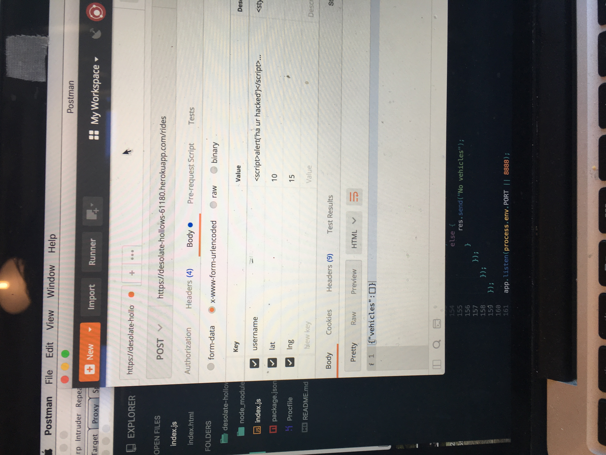
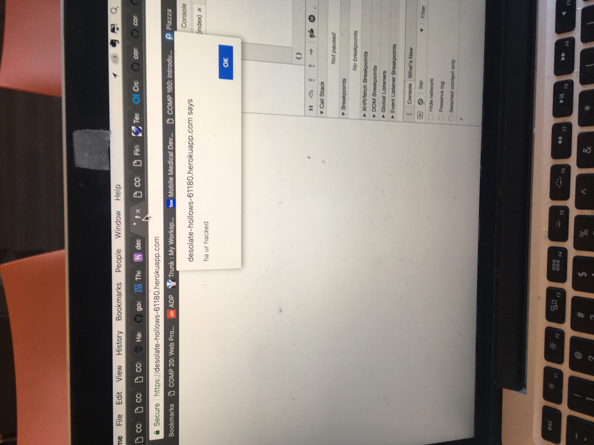
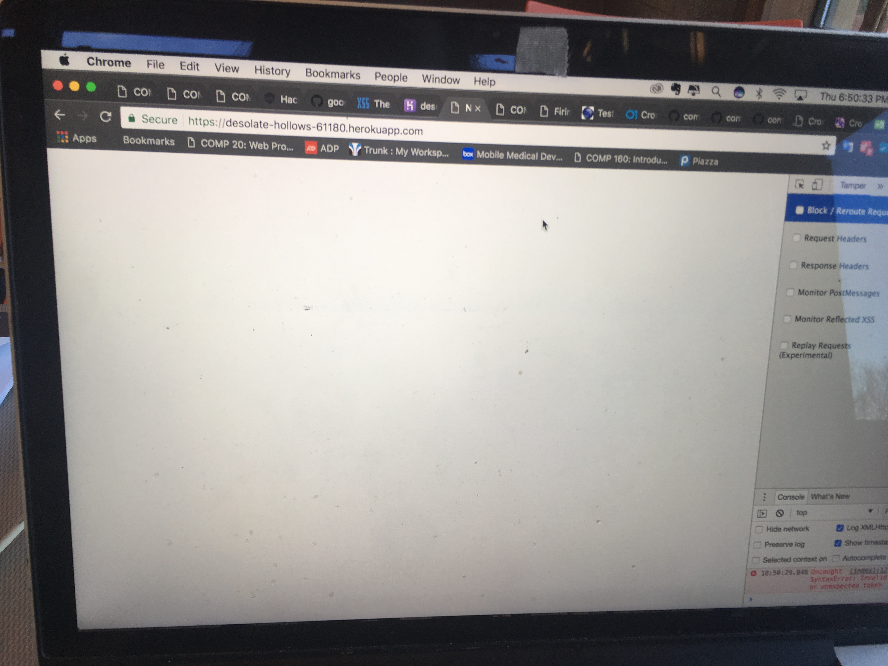
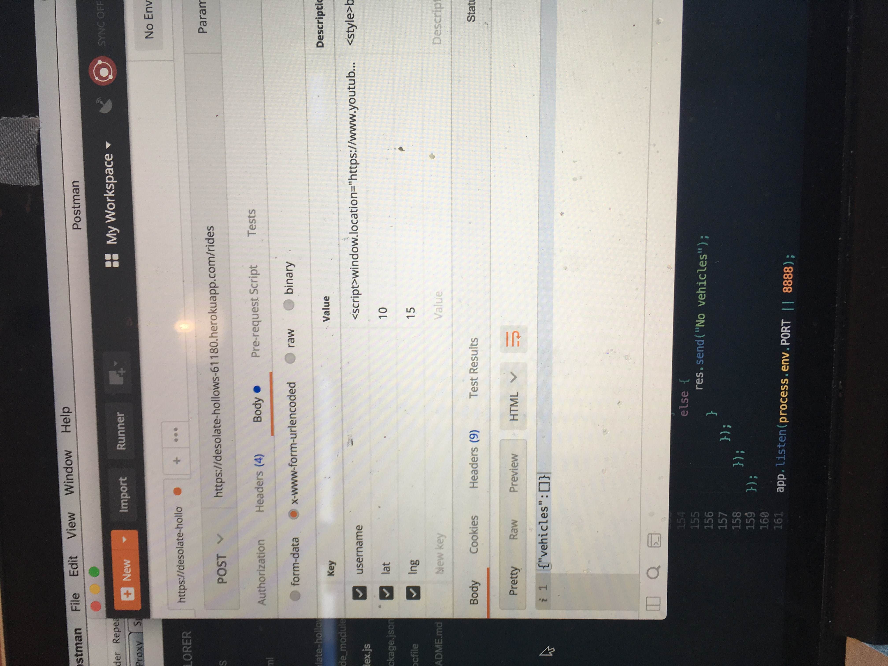

Homework #4 - Security and Privacy Assessment of Client-Side and Server-Side of NotUber
Introduction:
NotUber is a web application that matches users to available vehicles in the area.
The client provides their username and current location (lat and lng) to the app,
which will in turn return the information of the five most recent vehicles and display
the locations on the map. This was implemented in assignment 2 (client side) and 3 (server side)
by John Tagliaferro. The following is a review of the security of this web app.
Methodology:
Testing was initially carried out using the "black box" technique, where, based on my
understanding of the implementation of the app, but without reading the code, I attempted to
exploit vunerabilities in the program. This was effective, but to find further vulnerabilities,
I looked at the source code to pinpoint issues.
I mainly used curl and postman to issue post/ get requests
Abstract of Findings:
Generally speaking, the security issues in this program stemmed from blindly trusting the
user's input, without checking for special characters, leaving it very vulnerable to
attacks that "trick" the program into treating user input as javascript or HTML code.
I was able to exploit this by sending malicious javascript alerts, alter HTML to
make the screen blank, and redirect the heroku app to a youtube video.
Issues Found:
Issue: Using XSS Javascript to Send Unwanted Alert
Location: /rides
Severity: high. Manipulation of javascript could cause major issues when used with a more malicious intent
Description: this was found during the "black box" phase of testing, I suspected that the input wasn't
sanitized and would be vulnerable to this type of XSS attack. I used script tags in the post request to issue an alert,
as shown in the photo below.
Proof:


Resoultion: to fix this issue, a validator/ sanitizer would have ensured that special characters,
ex, "<>" would not be allowed, the validator module will remove these potentially malicious characters
and replace them with reasonable html equivilant.
Issue: Injecting HTML
Location: /rides
Severity: medium. This allowed me to drastically change the style of the webpage (ex. not showing any of it), but, this
injection did not grant me access to any of the confidential/ potentially harmful data in the site, only to it's visibility
Description:I used the style tags in the same way as I did in the previous example to style body display as nothing. I
did this after I examined the code, and found that the html was very vulnerable. This rendered the webpage completly empty
Proof:


Resoultion: The data needs to be sanatized/ validated!
Issue: Redirect
Location: /rides
Severity: Medium, as before, I was able to cause some chaos, but wasn't granted access to any sensitive data.
Description: this time, I put js in my post request to redirect the window to a youtube video
of my choosing. This makes the website inaccessble.
Proof:

Resoultion: Sanatize!